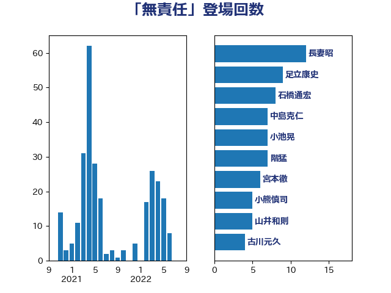

単語「無責任」

| 長妻昭 | 立憲民主党 | 12 回 |
| 足立康史 | 日本維新の会 | 9 回 |
| 石橋通宏 | 立憲民主党 | 8 回 |
| 中島克仁 | 立憲民主党 | 7 回 |
| 小池晃 | 日本共産党 | 7 回 |
| 階猛 | 立憲民主党 | 7 回 |
| 宮本徹 | 日本共産党 | 6 回 |
| 小熊慎司 | 立憲民主党 | 5 回 |
| 山井和則 | 立憲民主党 | 5 回 |
| 古川元久 | 国民民主党 | 4 回 |
| 岩渕友 | 日本共産党 | 4 回 |
| 枝野幸男 | 立憲民主党 | 4 回 |
| 沢田良 | 日本維新の会 | 4 回 |
| 田村貴昭 | 日本共産党 | 4 回 |
| 赤嶺政賢 | 日本共産党 | 4 回 |
| 赤羽一嘉 | 公明党 | 4 回 |
| 音喜多駿 | 日本維新の会 | 4 回 |
| 佐藤正久 | 自由民主党 | 3 回 |
| 山下貴司 | 自由民主党 | 3 回 |
| 山添拓 | 日本共産党 | 3 回 |
| 田村憲久 | 自由民主党 | 3 回 |
| 田村智子 | 日本共産党 | 3 回 |
| 紙智子 | 日本共産党 | 3 回 |
| 井上哲士 | 日本共産党 | 2 回 |
| 伊藤岳 | 日本共産党 | 2 回 |
| 吉川元 | 立憲民主党 | 2 回 |
| 吉良よし子 | 日本共産党 | 2 回 |
| 吉良州司 | 無所属 | 2 回 |
| 塩川鉄也 | 日本共産党 | 2 回 |
| 塩村あやか | 立憲民主党 | 2 回 |
| 安達澄 | 無所属 | 2 回 |
| 小西洋之 | 立憲民主党 | 2 回 |
| 川田龍平 | 立憲民主党 | 2 回 |
| 打越さく良 | 立憲民主党 | 2 回 |
| 早坂敦 | 日本維新の会 | 2 回 |
| 本庄知史 | 立憲民主党 | 2 回 |
| 本村伸子 | 日本共産党 | 2 回 |
| 杉尾秀哉 | 立憲民主党 | 2 回 |
| 源馬謙太郎 | 立憲民主党 | 2 回 |
| 玉木雄一郎 | 国民民主党 | 2 回 |
| 田島麻衣子 | 立憲民主党 | 2 回 |
| 稲富修二 | 立憲民主党 | 2 回 |
| 穀田恵二 | 日本共産党 | 2 回 |
| 笠井亮 | 日本共産党 | 2 回 |
| 緑川貴士 | 立憲民主党 | 2 回 |
| 萩生田光一 | 自由民主党 | 2 回 |
| 高橋千鶴子 | 日本共産党 | 2 回 |
| 中川正春 | 立憲民主党 | 1 回 |
| 井林辰憲 | 自由民主党 | 1 回 |
| 佐藤英道 | 公明党 | 1 回 |
| 倉林明子 | 日本共産党 | 1 回 |
| 原口一博 | 立憲民主党 | 1 回 |
| 古賀之士 | 立憲民主党 | 1 回 |
| 吉田宣弘 | 公明党 | 1 回 |
| 吉田統彦 | 立憲民主党 | 1 回 |
| 国光あやの | 自由民主党 | 1 回 |
| 堤かなめ | 立憲民主党 | 1 回 |
| 大口善徳 | 公明党 | 1 回 |
| 大石あきこ | れいわ新選組 | 1 回 |
| 大西健介 | 立憲民主党 | 1 回 |
| 奥野総一郎 | 立憲民主党 | 1 回 |
| 宮内秀樹 | 自由民主党 | 1 回 |
| 山口壯 | 自由民主党 | 1 回 |
| 山崎誠 | 立憲民主党 | 1 回 |
| 岡本あき子 | 立憲民主党 | 1 回 |
| 岸田文雄 | 自由民主党 | 1 回 |
| 岸真紀子 | 立憲民主党 | 1 回 |
| 川合孝典 | 国民民主党 | 1 回 |
| 平山佐知子 | 無所属 | 1 回 |
| 後藤祐一 | 立憲民主党 | 1 回 |
| 木村英子 | れいわ新選組 | 1 回 |
| 末松信介 | 自由民主党 | 1 回 |
| 末松義規 | 立憲民主党 | 1 回 |
| 杉久武 | 公明党 | 1 回 |
| 杉田水脈 | 自由民主党 | 1 回 |
| 松沢成文 | 日本維新の会 | 1 回 |
| 梅村みずほ | 日本維新の会 | 1 回 |
| 櫻井周 | 立憲民主党 | 1 回 |
| 浜田聡 | NHK党 | 1 回 |
| 牧山ひろえ | 立憲民主党 | 1 回 |
| 玄葉光一郎 | 立憲民主党 | 1 回 |
| 田名部匡代 | 立憲民主党 | 1 回 |
| 石井章 | 日本維新の会 | 1 回 |
| 石井苗子 | 日本維新の会 | 1 回 |
| 石垣のりこ | 立憲民主党 | 1 回 |
| 礒崎哲史 | 国民民主党 | 1 回 |
| 福島みずほ | 社会民主党 | 1 回 |
| 緒方林太郎 | 無所属 | 1 回 |
| 菅直人 | 立憲民主党 | 1 回 |
| 菊田真紀子 | 立憲民主党 | 1 回 |
| 蓮舫 | 立憲民主党 | 1 回 |
| 藤岡隆雄 | 立憲民主党 | 1 回 |
| 藤田文武 | 日本維新の会 | 1 回 |
| 谷田川元 | 立憲民主党 | 1 回 |
| 阿部知子 | 立憲民主党 | 1 回 |
| 青木愛 | 立憲民主党 | 1 回 |
| 青柳仁士 | 日本維新の会 | 1 回 |
| 馬場伸幸 | 日本維新の会 | 1 回 |
| 麻生太郎 | 自由民主党 | 1 回 |